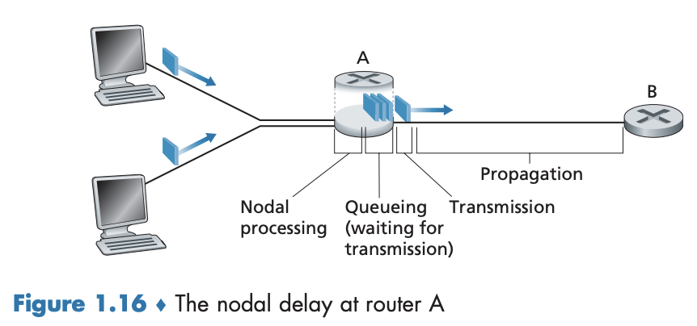
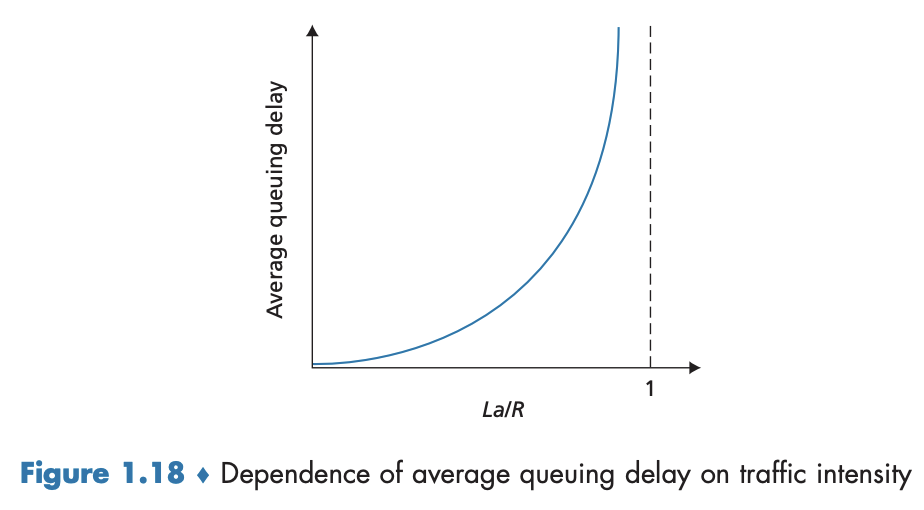
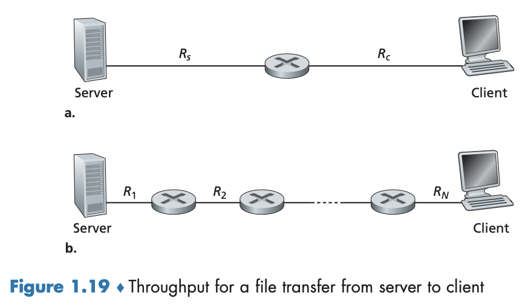
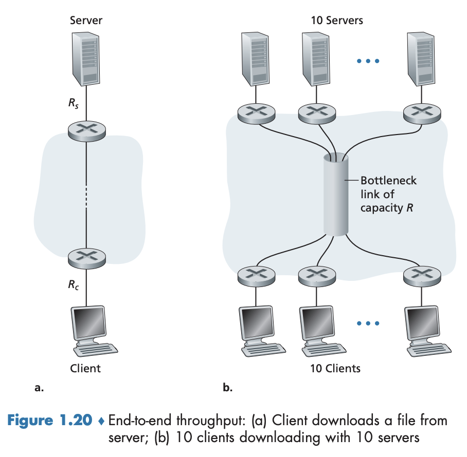

1.4 패킷 교환 네트워크에서의 지연, 손실과 처리율
이 절에서는 컴퓨터 네트워크에서의 지연, 손실, 처리율을 조사하고 개량화할 것이다.
1.4.1 패킷 교환 네트워크에서의 지연 개요
지연 유형
패킷이 한 호스트에서 출발하고 일련의 라우터들을 통과하며 다른 호스트에 도달할 때 각 노드로 전파될 때마다 다양한 지연을 겪게 된다. 여러 지연들이 모여 전체 노드 지연(total nodal delay) 을 일으킨다.
- 전체 노드 지연의 구성
- **노드 처리 지연(nodal processing delay)
- **큐잉 지연(queueing delay)
- 전송 지연(transmission delay)
- 전파 지연(propagation delay)

출발지와 목적지 사이 종단 간 경로의 일부로서 한 패킷이 업스트림 노드로부터 라우터 A를 통해 라우터 B로 보내진다.
- 라우터 A가 라우터 B에 이르는 하나의 출력(outgoing) 링크를 가진다.
- 링크 앞에 큐(queue, 버퍼(buffer))가 있다.
- 패킷이 업스트림 노드로부터 라우터 A에 도착하면, 라우터 A는 그 패킷에 대한 적당한 출력 링크를 결정하기 위해 패킷 헤더를 조사하고 선택된 링크로 그 패킷을 보낸다.
- 링크가 이미 이용되고 있거나 그 링크를 이용하기 위해 큐에서 대기하는 패킷이 있다면 새로 도착하는 패킷은 큐에 들어간다(없으면 바로 링크로 전송).
처리 지연
패킷 헤더를 조사하고 그 패킷을 어디로 보낼지를 결정하는 시간
- 업스트림 노드에서 라우터 A로 패킷의 비트를 전송하면서 발생하는 패킷의 비트 레벨 오류를 조사하는 데 필요한 시간과 같은 요소를 포함할 수도 있다.
- 고속 라우터에서의 처리 지연은 일반적으로 수 마이크로초다.
- 노드 처리 후에 라우터는 그 패킷을 라우터 B에 이르는 링크에 앞선 큐에 보낸다.
큐잉 지연
패킷이 큐에서 링크로 전송되기를 기다리는 시간
- 큐가 비어있고 다른 패킷이 전송 중인 상태가 아니라면 패킷의 큐잉 지연은 0이다.
- 트래픽이 많고 다른 많은 패킷이 전송 대기 중이면 큐잉 지연은 매우 길어진다.
- 현실에서 큐잉 지연은 수 마이크로초에서 수 밀리초에 이른다.
전송 지연
패킷의 모든 비트를 링크로 밀어내는 데(또는 전송하는 데) 필요한 시간
- 패킷은 선입선출 방식으로 전송된다고 가정할 때, 길이를 $L$비트로, 라우터 A 에서 라우터 B까지의 링크의 전송률은 $R$ bps로 나타내자. $R$은 라우터 B로 가는 링크의 전송률에 의해 결정된다.
- 10Mbps 이더넷 링크의 전송률 $R$은 10Mbps, 100Mbps 이더넷 링크의 전송률 $R$은 100Mbps
- 전송 지연은 $L/R$이다. 일반적으로 수 마이크로초에서 수 밀리초에 이른다.
전파 지연
링크의 처음부터 라우터 B까지의 전파에 필요한 시간
- 비트는 링크의 전파 속도로 전파된다.
- 전파 속도는 링크의 물리 매체(광섬유, 꼬임쌍선 등)에 따라 다른데 범위는 아래와 같다. $$2\times10^8\text{미터/초}\sim3\times10^8\text{미터/초}$$
- 즉, 전파 지연은 $d/s$다. 일반적으로 수 밀리초에 이른다.
- 패킷의 마지막 비트가 B 노드에 전파되면 이 비트와 앞선 모든 비트는 라우터 B에 저장된다. 라우터 B에서 이러한 과정이 다음 노드로 전달되기 위해 반복된다.
전송 지연과 전파 지연 비교
전송 지연은 라우터가 패킷을 내보내는 데 필요한 시간이며, 전파 지연은 비트가 한 라우터에서 다음 라우터로 전파되는 데 걸리는 시간이다.
전체 노트 지연
위 지연들을 합한 값
$$d_\text{nodal}=d_\text{proc}+d_\text{queue}+d_\text{trans}+d_\text{prop}$$
- $d_\text{prop}$: 대학 캠퍼스 내부의 두 라우터를 연결하는 링크 정도는 마이크로초 정도이기에 무시할 수 있으나, 정지 위성 링크로 연결된 두 라우터의 경우에는 수백 밀리초이다(중요 요소).
- $d_\text{trans}$: 무시할 수 있는 정도에서 상당한 지연에까지 이를 수 있다. 예를 들어 10Mbps 이상의 전송률을 가진 LAN에서는 무시할 수 있으나 저속 다이얼업 모델 링크에서 보내지는 커다란 인터넷 패킷은 수백 밀리초에 이를 수 있다.
- $d_\text{proc}$: 보통 무시될 수 있으나 라우터의 최대 처리율, 즉 라우터가 패킷을 전달할 수 있는 최대율(최대 속도)에는 상당한 영향을 준다.
1.4.2 큐잉 지연과 패킷 손실
- $d_\text{queue}$: 가장 복잡하며 다른 세 가지 지연과는 다르게 패킷마다 다를 수 있다.
- 트래픽이 큐에 도착하는 비율, 링크의 전송률, 도착하는 트래픽의 특성, 즉 그 트래픽이 주기에 맞춰서 또는 버스트(burst)하게 도착하느냐에 의해 주로 결정된다.
❓ $a$를 패킷이 큐에 도착하는 평균율이라고 하자($a$의 단위는 패킷/초). $R$은 전송률, 즉 비트가 큐에서 밀려나는 비율(비트/초)라고 하자. 모든 패킷은 $L$비트라고 가정하자.
- 이때 비트가 큐에 도착하는 평균율은 $La$비트/초다.
- 트래픽 강도(traffic intensity), 즉 $La/R$는 큐잉의 정도를 측정하는 데 매우 중요하다.
- $La/R>1$: 비트가 큐에 도착하는 평균율이 비트가 큐에서 전송되는 비율을 초과한다. 큐는 끝없이 증가하고 큐잉 지연은 무한대에 도달한다(큐가 무한대로 크다고 가정할 때).
이렇기에 트래픽 강도가 1보다 크지 않게 시스템을 설계해야 한다. - $La/R\leq1$: 도착 트래픽의 특성이 큐잉 지연에 영향을 미친다. 주기적으로 도착한다면($L/R$초마다) 큐잉 지연은 없고, $N$개의 패킷이 몰려서 도착한다면(동시에 $(L/R)N$초마다) 처음에 전송된 패킷은 큐잉 지연이 없고, 두 번째 도착한 패킷은 $L/R$초, 그리고 $n$번째 전송된 패킷은 $(n-1)L/R$초의 큐잉 지연을 겪는다.
- $La/R>1$: 비트가 큐에 도착하는 평균율이 비트가 큐에서 전송되는 비율을 초과한다. 큐는 끝없이 증가하고 큐잉 지연은 무한대에 도달한다(큐가 무한대로 크다고 가정할 때).
- 주기적인 도착에 대한 위 예시는 다소 이론적이며, 일반적으로 큐에 도착하는 프로세스는
랜덤(random)하다. - 현실적으로 $La/R$은 지연에 대한 통계를 완전히 분석하는 데 충분하지 않지만 큐잉 지연에 대한 어느 정도의 직관적 이해를 얻는 데 유용하다.
- 트래픽 강도에 대한 평균 큐잉 지연의 질적 의존도는 그림 1.18 에서 확인할 수 있으며 트래픽 강도가 1에 접근할수록 평균 큐잉 지연이 급격히 증가한다.

패킷 손실
- 현실에서 큐의 용량은 스위치 설계와 비용에 크게 의존하며 일반적으로 유한 용량을 갖는다.
- 패킷을 저장할 수 없는 경우에 라우터는 그 패킷을 버린다(drop). 즉, 그 패킷을 잃어버리게 된다(lost). → 큐 오버플로우(overflow)
- 종단 시스템 입장에서 패킷 손실은 패킷이 네트워크 코어로 전송되었으나 네트워크로부터 목적지에 나타나지 않는 것으로 보일 것이며, 손실 패킷의 비율은 트래픽 강도가 클수록 증가한다.
- 노드에서의 성능은 흔히 지연뿐만 아니라 패킷 손실 확률로도 측정한다.
- 손실 패킷은 모든 데이터가 궁극적으로 출발지에서 목적지까지 전달되었음을 보장하기 위해 종단 간에 재전송될 수 있다.
1.4.3 종단 간 지연
❓ 출발지 호스트와 목적지 호스트 사이에 $N-1$개의 라우터가 있다고 하자. 그리고 네트워크가 혼잡하지 않으며(큐잉 지연 무시), 각 라우터의 출발지 호스트의 처리 지연은 $d_{\text{proc}}$이고, 각 호스트와 출발지 호스트에서의 전송률은 $R$비트/초다. 그리고 각 링크에서의 젼파 지연은 $d_{\text{prop}}$라고 하자.
이제 노드 지연을 더하여 종단 간의 지연을 얻을 수 있다. $$d_{\text{end-end}}=N(d_{\text{proc}}+d_{\text{trans}}+d_{\text{prop}})$$ 여기서 $d_{\text{trans}}=L/R$ 이고, $L$은 패킷 크기다. 처리와 전파 지연을 고려하지 않은 아래 식을 일반화한 것이다. $$d_{\text{종단 간 지연}}=N\frac{L}{R}$$
종단 시스템, 애플리케이션 그리고 그 밖의 지연
- 공유 매체(예: 와이파이 혹은 케이블 모뎀)로 패킷을 전송하고자 하는 종단 시스템은 다른 종단 시스템과 매체를 공유하기 위해 프로토콜의 일부로 전송을
의도적으로지연시킬 수 있다. - VoIP(Voice-over-IP) 애플리케이션이 있는 미디어 패킷와 지연(media packetization delay)도 또 다른 예시가 될 수 있다.
- 송신 측은 먼저 패킷을 인터넷으로 보내기 전에 패킷을 인코딩된 디지털 음성으로 채워야 하는데 여기서 시간이 많이 걸릴 수 있다.
1.4.4 컴퓨터 네트워크에서의 처리율
- 지연과 패킷 손실 이외에 컴퓨터 네트워크에서의 또 다른 주요한 성능 수단은 종단 간 처리율(throughput) 이다.
❓ 처리율을 정의하기 위해 컴퓨터 네트워크를 통해 호스트 A에서 호스트 B로 커다란 파일을 전송하는 것을 고려해보자.
- 순간적인 처리율(instantaneous throughput): 어느 한 순간에 호스트 B가 파일을 수신하는 비율(비트/초)
- 평균 처리율(average throughput): 파일이 $F$비트로 구성되고 호스트 B가 모든 $F$ 비트를 수신하는 데 $T$ 초가 걸린다면, $F/T$ 비트/초다.
- 인터넷 전화 같은 애플리케이션의 경우, 낮은 지연과 순간적인 처리율이 지속적으로 어떤 임곗값(threshold)을 넘는 것이 바람직하며, 파일 전송을 포함하는 다른 애플리케이션의 경우, 지연은 심각하지 않으나 가능한 한 높은 처리율을 갖는 것이 바람직하다.
- 임계값의 예시: (인터넷 전화 애플리케이션): 24kbps 이상, (실시간 비디오 애플리케이션): 256kbps 이상
처리율의 개념을 좀 더 자세히 이해하기 위해 다음 예를 고려해보자.  그림 1.19의 예시를 다음과 같이 가정하자.
❓ (a)는 2개의 종단 시스템(통신 링크)과 라우터로 연결된 서버-클라이언트 모습이다. $R_c$는 서버와 라우터 간의 링크 속도, $R_s$는 라우터와 클라이언트 간의 링크 속도를 나타낸다. 전체 네트워크에서 보내지는 비트는 서버-클라이언트로만 보내지는 비트라고 가정하자(이상적인 시나리오). 이때 서버-클라이언트 처리율은 얼마인가?
→ 비트를 유체(fluid), 통신 링크를 파이프(pipe) 로 생각하면 쉽게 구할 수 있다.
→ $R_s<R_c$ 이면, 서버가 배출한 비트는 라우터를 통해 올바로 ‘흘러갈’ 것이고, $R_c<R_s$이면, 서버가 수신하는 비트만큼 빠르게 배출할 수 없을 것이다.
→ 따라서 처리율은 $\min{R_c, R_s}$, 즉 병목 링크(bottlenect link) 전송률이 처리율이 된다.
→ $F=3,200$만 비트의 MP3 파일을 다운로드하고 서버는 $R_s=2$ Mbps의 전송률을 가지며 우리는 $R_c=1$ Mbps의 접속 링크를 갖고 있다고 가정할 시 이론 상 걸리는 시간은 32초다.
❓ (b)는 이제 서버-클라이언트 간에 $N$개의 링크를 가진 네트워크를 보여주고 있다. 여기서 $N$개 링크의 전송률은 각각 $R_1,R_2,\ldots,R_N$이다.
→ 1개든 $N$개든 병목 링크 전송률이 처리율이 된다. 따라서 처리율은 $\min{R_1,R_2,\ldots,R_N}$이다.

❓ 그림 1.20(a)는 2개의 종단 시스템과 2개의 라우터로 연결된 모습을 보여준다. 서버는 $R_s$의 전송률, 클라이언트는 $R_c$의 접속 링크 속도로 네트워크에 연결되어 있다. 이제 통신 네트워크의 코어에 있는 모든 링크가 둘보다 매우 높은 전송률을 갖고 있다고 가정하며(실제로도 네트워크 코어 전송률은 빠르다), 링크의 경로가 유일하다고 할 때 전송률을 구해보자.
→ 첫 번째 예시와 같은 방법으로 접근하면 된다. 답도 $\min{R_c, R_s}$의 처리율로 같다.
❓ 위 그림 (b)를 보자. 10개의 서버와 10개의 클라이언트로 구성되어 있다. 10개의 동시적인 다운로드가 일어나고 있으며, 네트워크에서 이러한 다운로드가 유일한 트래픽이라고 가정하자. 공통 링크 $R$의 전송률을 $R$이라고 하자. 네트워크 코어의 전송률은 $R_s, R_c, R$ 보다 크다고 가정할 때의 처리율을 구해보자.
→ 답은 틀림없이 $\min{R_c, R_s}$의 처리율이 된다.
❓ 그렇다면 공통 링크 $R$의 속도가 $R_s, R_c$와 같은 수준이라면 처리율은 어떻게 될 것인가(보통 $R$의 속도는 다른 둘 보다 수백 배 크다). $R_s, R_c$는 각각 2 Mbps, 1 Mbps이며, 공통 링크 $R$의 속도는 5 Mbps라고 하자.
→ 이 경우 코어에서의 공유 링크가 병목이 된다. 공통 링크 $R$의 속도가 더 높다고 하더라도 결과적으로 10쌍의 서버-클라이언트로 나눠야 하기에 실제 속도는 $R/10$이 되며, 각 다운로드에 대한 종단 간 처리율은 500 kbps로 줄어든다.